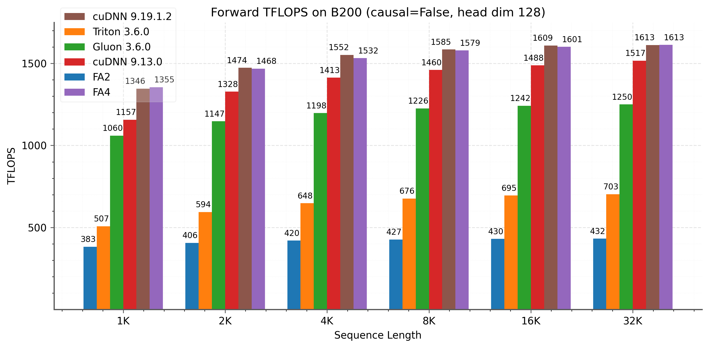
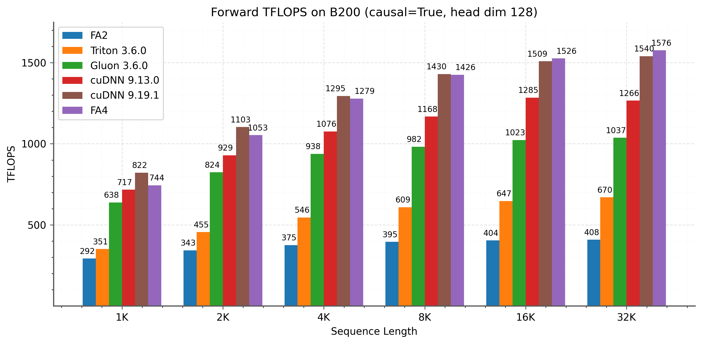
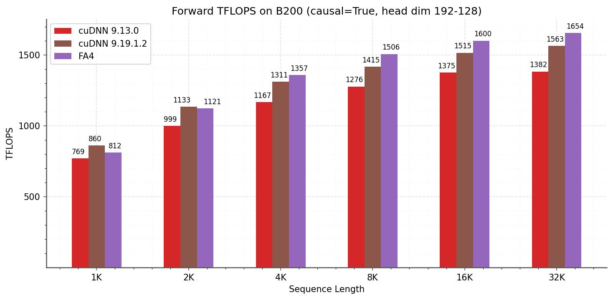
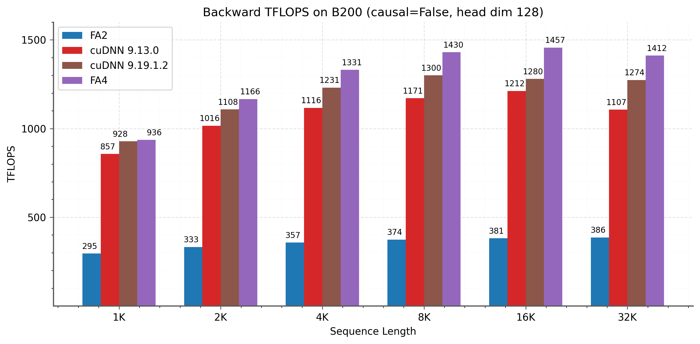
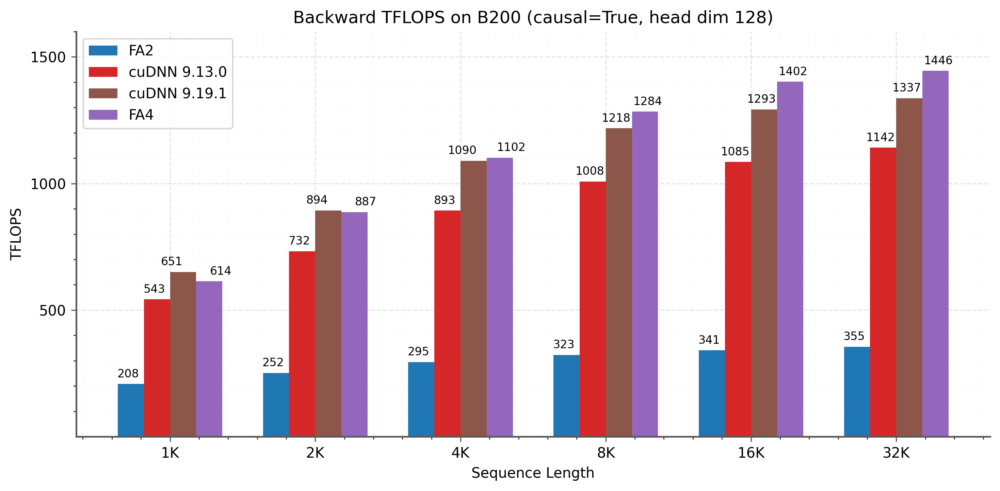

FlashAttention-4: 算法与内核流水线协同设计应对非对称硬件扩展
一、论文摘要
注意力机制作为广泛使用的Transformer架构的核心层，是大语言模型和长上下文应用的主要瓶颈。尽管FlashAttention-3通过异步执行和warp特化针对Hopper GPU进行了优化，但它主要针对H100架构。AI行业已迅速转向部署基于Blackwell的系统，如B200和GB200，这些系统由于非对称硬件扩展而表现出根本不同的性能特征：张量核心吞吐量翻倍，而其他功能单元（共享内存带宽、指数单元）的扩展较慢或保持不变。
本文针对Blackwell GPU上不断变化的瓶颈开发了若干技术：（1）重新设计流水线以利用完全异步的MMA操作和更大的瓦片尺寸；（2）通过软件模拟指数和条件softmax重新缩放来减少非矩阵乘法操作；（3）利用张量内存和2-CTA MMA模式来减少反向传播中的共享内存流量和原子加法。
本文的方法FlashAttention-4在B200 GPU上相比cuDNN 9.13实现了最高1.3倍的加速，相比Triton实现了最高2.7倍的加速，在BF16下达到最高1613 TFLOPs/s（71%利用率）。除了算法创新，本文完全使用CuTe-DSL嵌入在Python中实现FlashAttention-4，与传统C++模板方法相比实现了20-30倍的编译时间提升，同时保持完全的表达能力。
二、基本信息
论文 ID: 2603.05451
标题: FlashAttention-4: Algorithm and Kernel Pipelining Co-Design for Asymmetric Hardware Scaling
作者: Ted Zadouri¹'⁶, Markus Hoehnerbach², Jay Shah³, Timmy Liu⁴, Vijay Thakkar²'⁵, Tri Dao¹'⁶
单位:
- ¹ Princeton University
- ² Meta
- ³ Colfax Research
- ⁴ NVIDIA
- ⁵ Georgia Tech
- ⁶ Together AI
会议/期刊: arXiv preprint
原文保存位置: ~/.openclaw/workspace/papers/20260310_FlashAttention4/source/
报告生成日期: 2026-03-10
三、论文主体分析
1 引言
Transformer架构继续作为几乎所有AI应用的主要骨干，从大语言模型到视觉和多模态系统。对于Transformer来说，注意力机制构成主要的计算瓶颈，自注意力分数在查询和密钥之间计算，呈现出序列长度的二次方扩展。将注意力扩展到更长的上下文解锁了新的能力，如多文档推理、整个代码库的建模以及高分辨率视频处理。同时，硬件加速器继续快速发展，每一代都提供更高的峰值计算吞吐量。然而，这种演变是非对称的：虽然矩阵乘法单元快速扩展，但内存带宽和专用计算单元等其他功能单元扩展较慢，创建了越来越不平衡的硬件流水线，需要仔细的算法协同设计。
FlashAttention通过消除慢速全局内存的中间读写来加速注意力计算。FlashAttention-2重构了算法以在序列长度维度上并行化，提高GPU占用率。FlashAttention-3进一步为Hopper GPU适配算法，利用warp特化的异步执行并加入FP8支持。然而，这些方法主要针对消费级GPU，而大多数AI计算部署在数据中心GPU上。同时，FlashAttention-3主要针对NVIDIA Hopper H100架构，而AI行业已迅速转向部署基于Blackwell的数据中心系统如B200和GB200，这些GPU具有根本不同的性能特征。
加速器演变中的一个关键趋势是硬件单元的非对称扩展。虽然Blackwell B200相比Hopper H100将张量核心吞吐量翻倍（FP16/BF16为2.25 PFLOPS对比1 PFLOPS），但其他功能单元（共享内存带宽、指数单元和整数/浮点ALU）扩展较慢或保持不变。因此，非MMA资源成为瓶颈。本文的屋顶线分析显示，对于Blackwell上的典型注意力工作负载，共享内存流量和指数操作现在占据执行时间的主导地位，超过MMA计算的25-60%。此外，Blackwell引入了新的架构特性：每个SM 256 KB的张量内存（TMEM）用于存储张量核心中间结果、128×128 MMA瓦片（是Hopper 64×128面积的两倍），以及完全异步的张量核心操作，可直接写入TMEM。
本文提出FlashAttention-4，与现代GPU架构中不断变化的瓶颈协同设计算法和内核实现：
最大重叠的重新设计流水线：为前向和反向传播开发了新的软件流水线，利用Blackwell的完全异步MMA操作和更大的瓦片尺寸，在张量核心、softmax计算和内存操作之间实现最大重叠。
指数单元瓶颈缓解：对于前向传播，使用FMA单元上的多项式近似实现软件模拟指数函数，增加指数吞吐量。还引入条件softmax重新缩放，跳过不必要的重新缩放操作。
共享内存流量减少：对于反向传播，利用张量内存存储更多中间结果，减少共享内存流量。还利用Blackwell的2-CTA MMA模式，让每个CTA对操作数B进行分阶段和加载一半，进一步减少共享内存流量，并利用它重构dQ步骤，将原子归约数量减半。还实现了确定性执行模式，开销最小，支持强化学习的可重现训练。
改进的调度和资源分配：开发了针对Blackwell资源约束和更大瓦片尺寸的新型CTA调度策略和寄存器分配方案。
除了算法创新，FlashAttention-4完全使用CuTe-DSL嵌入在Python中实现，与传统C++模板方法相比实现了20-30倍的编译时间提升，同时保持完全的表达能力。
2 背景
2.1 多头注意力
设Q, K, V ∈ ℝ^{N×d}为与单个头关联的查询、键和值输入序列，其中N是序列长度，d是头维度。注意力输出O ∈ ℝ^{N×d}计算如下：
$$\mathbf{S} = \alpha \mathbf{Q} \mathbf{K}^\top \in \mathbb{R}^{N \times N}$$ $$\mathbf{P} = \softmax(\mathbf{S}) \in \mathbb{R}^{N \times N}$$ $$\mathbf{O} = \mathbf{P}\mathbf{V} \in \mathbb{R}^{N \times d}$$其中softmax按行应用，α = 1/√d是缩放因子。实际上，我们从S中减去rowmax(S)以获得数值稳定性。
给定输出梯度dO ∈ ℝ^{N×d}，反向传播计算：
$$\mathbf{dV} = \mathbf{P}^\top \mathbf{dO}, \quad \mathbf{dP} = \mathbf{dO} \mathbf{V}^\top$$ $$\mathbf{dS} = \dsoftmax (\mathbf{dP})$$ $$\mathbf{dQ} = \alpha \mathbf{dS} \mathbf{K}, \quad \mathbf{dK} = \alpha \mathbf{dS}^\top \mathbf{Q}$$其中dsoftmax(dP)表示按行的softmax梯度 ds = (diag(p) - p p^⊤)dp，其中 p = softmax(s)。
2.2 GPU硬件特性与执行模型
本文描述了与FlashAttention-4相关的GPU执行模型方面，重点关注NVIDIA Blackwell架构（B200和GB200）。重点介绍了与之前的Hopper架构的关键区别，这些区别推动了FlashAttention-4中的优化。
内存层次结构：GPU的内存组织为与带宽成反比的容量层次结构。全局内存（GMEM）也称为HBM，是可被所有流式多处理器（SM）访问的片外DRAM。来自GMEM的数据透明缓存在片上L2缓存中。接下来，每个SM包含一个小的、程序员管理的、高度分块的缓存，称为共享内存（SMEM），位于芯片上。每个SM最后还有寄存器文件。
Blackwell引入了一种新的内存级别，称为张量内存（TMEM），这是每个SM上专门设计用于存储张量核心操作中间结果的256 KB片上内存。与共享内存不同，TMEM是warp同步的，与张量核心紧密耦合，使矩阵乘累加（MMA）单元能够直接将输出写入TMEM，而不会消耗寄存器。这缓解了困扰Hopper内核的极端寄存器压力，并支持更大的瓦片尺寸。TMEM以32列（16 KB）为粒度分配，需要程序员显式管理分配、释放和数据移动。
线程层次结构：GPU的编程模型围绕称为线程的执行单元逻辑分组组织。从最细到最粗的级别，线程层次结构包括线程、warp（32个线程）、warpgroup（4个连续的warp）、线程块（即协作线程数组或CTA）、线程块集群和网格。同一CTA中的线程在同一SM上共同调度，同一集群中的CTA在同一GPC上共同调度。SMEM可直接由CTA内的所有线程寻址，而每个线程最多有256个寄存器（RMEM）供自己私有使用。
张量核心与增强的异步性：Blackwell具有第五代张量核心，在比之前架构大得多的瓦片上运行。每个MMA张量核心指令处理128×N瓦片（通常N=128或256），而Hopper上为64×N。关键的是，Blackwell的MMA直接异步写入TMEM，而Hopper的MMA写入寄存器。这种完全异步性使得更好的计算和其他操作之间的重叠成为可能，因为MMA单元不再阻塞在寄存器写回上。
硬件对异步性的支持允许warp特化内核，其中CTA的warp分为只能发出数据移动或计算的生产者或消费者角色。
2-CTA张量核心：Blackwell支持2-CTA张量核心MMA模式，其中CTA对在同一线程块集群内协作执行单个MMA，允许操作从两个CTA读写张量MMA。启动MMA的线程需要启动并保持对等CTA处于活动状态。与单CTA MMA将维度M限制为128相比，配对模式通过在M维度上分割A瓦片和累加器、并在N维度上跨两个CTA分割B瓦片来支持M=128或256，使得每个CTA只在其自己的共享内存中暂存一半的B。这减少了冗余的共享内存容量和带宽。
不断变化的瓶颈：Blackwell反映的一个关键趋势是张量核心吞吐量比其他功能单元扩展得更快。Blackwell将FP16/BF16张量核心吞吐量翻倍（每个GPU 2.25 PFLOPS对比Hopper的1 PFLOPS），但共享内存带宽和指数单元吞吐量保持不变或扩展得更慢。这种不平衡将性能瓶颈从矩阵乘法转移到共享内存流量和非矩阵乘法操作（如softmax）。
B200（和GB200）上若干硬件组件的吞吐量列在下面：
- 张量核心：BF16 MMA的吞吐量为每时钟每SM 8192次运算，是Hopper 4096次运算的两倍。
- 指数单元：B200和GB200上的多功能单元（MUFU）可以执行每时钟每SM 16次运算，与Hopper相同。
- 共享内存：读取吞吐量为每时钟每SM 128字节，与Hopper相同。
3 算法
3.1 注意力前向传播
本文首先进行屋顶线分析，以展示注意力前向传播的瓶颈，这促使本文设计新的流水线，以及FlashAttention算法的变化以提高指数单元的吞吐量并避免大部分softmax重新缩放步骤。
供给与速度分析：通过分析屋顶线来提供内核设计和优化的直觉，基于矩阵乘法单元（张量核心）、共享内存（smem）和指数单元的吞吐量。
设瓦片沿Q和K序列长度维度的形状为M×N，头维度为d。分析计算和内存流量需求以识别性能瓶颈。
MMA计算：前向传播每次迭代执行两个矩阵乘累加（MMA）操作：QK^⊤（从M×d和d×N输入计算M×N输出）和PV（从M×N和N×d输入计算M×d输出）。每个MMA需要2MNd个浮点运算。张量核心吞吐量为每周期8192 FLOP，总计算时间为：
$$T_{\text{MMA}} = \frac{4MNd}{8192} \text{ cycles}$$共享内存流量：两个MMA中，一个是无共享-无共享（SS），两个操作数都从共享内存读取（QK^⊤），另一个是张量-共享（TS），操作数A从张量内存读取，操作数B从共享内存读取（PV）。由于每个MMA指令在128×128的瓦片上操作，计算M×N输出需要⌈M/128⌉×⌈N/128⌉个MMA指令。关键的是，当需要多个MMA指令时，共享内存操作数会被多次读取。
对于QK^⊤（SS），计算M×N输出需要⌈M/128⌉×⌈N/128⌉个MMA指令，每个指令从共享内存读取128×d的Q块和128×d的K^⊤块。总共享内存读取为⌈M/128⌉×⌈N/128⌉×256d元素。对于PV（TS），计算M×d输出需要⌈M/128⌉×⌈d/128⌉个MMA指令，每个指令从共享内存读取N×128的V块，总计⌈M/128⌉×⌈d/128⌉×128N元素。每个元素2字节（bf16），每周期128字节带宽，共享内存读取时间为：
$$T_{\text{smem}} = \frac{3MNd}{8192} \text{ cycles}$$（假设M、N、d是128的倍数）。
指数单元：指数单元计算softmax计算所需的逐元素操作。前向传播需要对M×N个值（对应注意力矩阵S）进行指数运算。吞吐量为每周期16次运算，指数单元需要：
$$T_{\text{exp}} = \frac{MN}{16} \text{ cycles}$$表1总结了两个典型瓦片配置的屋顶线分析。对于M = N = d = 128，资源平衡良好，共享内存（768周期）略低于MMA计算和指数单元（均为1024周期）。对于更大的瓦片尺寸M = 256, N = d = 128，共享内存流量由于多次读取MMA操作数而增加到1536周期，而MMA计算和指数单元翻倍至2048周期。

图1：FlashAttention-4前向流水线。上标H表示对应"高"Q瓦片的矩阵，下标L表示对应"低"Q瓦片的矩阵。每个Q瓦片对应128个查询token。
:::
\begin{table}[t] \centering \small \begin{tabular}{lcc} \toprule Resource & $128^3$ & $256 \times 128^2$ \ \midrule MMA compute & \textbf{1024} & \textbf{2048} \ Shared memory & 768 & 1536 \ Exponential unit & \textbf{1024} & \textbf{2048} \ \bottomrule \end{tabular} \caption{注意力前向传播的屋顶线分析（周期）。对于两种瓦片尺寸，MMA计算和指数单元是主要瓶颈。} \end{table}
新的流水线以重叠矩阵乘法和softmax：由于Blackwell架构再次将张量核心FLOPs翻倍，仔细重叠softmax和张量核心操作比在Hopper上更为关键。本文遵循类似FA-3的ping-pong调度，其中每个线程块计算两个输出瓦片。当一个瓦片的张量核心操作执行时，另一个瓦片计算softmax。虽然Hopper张量核心将累加器保存在寄存器中，每个warp有四个线程以交错模式处理一行，但Blackwell张量核心将累加器保存在张量内存中。此外，Blackwell上的单个累加器瓦片是128×128元素，而Hopper的瓦片尺寸是64×128。
分配工作的自然方式是有两个warpgroup，每个128个线程，每个线程处理整行。这消除了在降低行最大值时进行warp间shuffle的需要，以及每个线程的多个统计寄存器。与FA-3一样，本文明确同步两个softmax warpgroup，使它们不在关键部分重叠。关键部分是指数计算部分。每个softmax warpgroup首先将整行加载到寄存器中，然后计算最大值，然后计算softmax（即减去最大值、重新缩放、指数化、转换为输入精度），最后计算行和。
与FA-3的另一个区别是，由于我们通过张量内存而不是寄存器文件传输P，我们可以将输出的重新缩放解耦到单独的"校正"warpgroup，从而将其从关键路径中移除。
指数函数的模拟：在现代GPU上，指数函数由多功能单元（MUFU）计算，其吞吐量远低于用于矩阵乘法的张量核心。在B200和GB200 GPU上，MUFU提供每周期每SM 16次运算，而矩阵乘法为每周期每SM 8192次运算。由于softmax计算需要许多指数求值，这种差异使指数函数成为注意力内核的关键瓶颈。
为了提高指数吞吐量，本文使用浮点FMA单元实现2^x的软件模拟，这些单元可以与MUFU并行运行。本文使用经典的区间归约技术（Cody-Waite）和多项式近似。关键洞察是分解指数计算：
$$2^x = 2^{\lfloor x \rfloor}\,2^{x-\lfloor x \rfloor}$$其中⌊x⌋是整数部分，x - ⌊x⌋ ∈ [0, 1)是分数部分。
整数部分2^⌊x⌋可以使用IEEE 754浮点表示的位操作有效计算。由于指数字段直接表示2的幂，计算2^⌊x⌋相当于对指数位进行移位和加法操作，可以使用整数ALU指令完成。
对于分数部分，在x_frac ∈ [0, 1)上近似2^{x_frac}使用多项式：
$$2^{x_{\text{frac}}} \approx \sum_{i=0}^{n} p_i\, x_{\text{frac}}^i$$其中p_0 = 1.0，其余系数选择为在[0, 1)上最小化相对近似误差，使用Sollya软件包计算。多项式求值使用Horner's方法和FMA指令，实现高吞吐量。
完整算法步骤如下：
- 将x夹紧到至少-127以避免下溢
- 使用向下舍入模式计算⌊x⌋：向x添加2^23 + 2^22（强制分数位进入尾数），然后用向下舍入模式将其减去
- 计算分数部分：x_frac = x - ⌊x⌋
- 求值多项式得到2^{x_frac}
- 组合整数和分数部分：将⌊x⌋移入指数字段并添加2^{x_frac}的尾数位
通过在MUFU和FMA单元之间分发指数计算，这种方法有效地增加了指数吞吐量，缓解了注意力计算中的关键瓶颈。
部分模拟：虽然多项式模拟增加了指数吞吐量，但这是有代价的：额外的寄存器（保存中间值和系数）、更高的寄存器带宽消耗，以及与MUFU指令相比更长的延迟。对所有指数求值使用模拟会增加寄存器压力，并可能导致溢出，从而抵消吞吐量优势。相反，本文只对每个softmax行中的部分条目（10-25%）应用模拟，其余条目通过硬件MUFU.EX2计算。精确的比例根据给定瓦片配置的MMA和指数吞吐量比率进行经验调整。
数值精度：表2比较了不同阶数多项式近似与硬件MUFU.EX2指令的精度，在[0, 1)上的4M随机输入上测量。报告了两个指标：FP32级误差（在任何量化之前）和BF16级误差（将FP32输出舍入到BF16后），均相对于FP64参考测量。
在FP32级，三阶多项式的最大相对误差为8.8×10^-5，大约是硬件的600倍。然而，在舍入到BF16后，误差变得几乎无法区分：对于所有阶数≥3，BF16的量化误差（~3.9×10^-3）主导多项式近似误差。三阶多项式在99%的输入上与硬件在1个BF16 ULP内匹配，这对于注意力计算是足够的，其中softmax输出以BF16精度消费。
\begin{table}[t] \centering \small \begin{tabular}{lccccc} \toprule & \multicolumn{2}{c}{FP32 vs FP64} & \multicolumn{2}{c}{BF16 vs FP64} \ \cmidrule(lr){2-3} \cmidrule(lr){4-5} Method & Max rel err & Mean rel err & Max rel err & Mean rel err \ \midrule Ideal (FP64→BF16) & --- & --- & $3.89 \times 10^{-3}$ & $1.41 \times 10^{-3}$ \ Hardware MUFU.EX2 & $1.41 \times 10^{-7}$ & $3.04 \times 10^{-8}$ & $3.89 \times 10^{-3}$ & $1.41 \times 10^{-3}$ \ Degree 3 & $8.77 \times 10^{-5}$ & $5.43 \times 10^{-5}$ & $3.90 \times 10^{-3}$ & $1.41 \times 10^{-3}$ \ Degree 4 & $3.05 \times 10^{-6}$ & $1.84 \times 10^{-6}$ & $3.89 \times 10^{-3}$ & $1.41 \times 10^{-3}$ \ Degree 5 & $1.44 \times 10^{-7}$ & $5.48 \times 10^{-8}$ & $3.89 \times 10^{-3}$ & $1.41 \times 10^{-3}$ \ \bottomrule \end{tabular} \caption{$2^x$多项式模拟在[0, 1)上的精度，相对于FP64参考在4M随机输入上测量。FP32列测量原始多项式输出；BF16列测量舍入到BF16后。对于所有阶数≥3，BF16量化误差占主导。} \end{table}
跳过在线softmax重新缩放：FlashAttention以块为单位计算注意力softmax(QK^⊤)V，以最小化内存流量。为了数值稳定性，算法在处理块时维护运行统计信息。当计算块j时，令S_j = Q K_j^⊤为该块的注意力分数。在线softmax算法跟踪：
$$m_j = \max(m_{j-1}, \rowmax(S_j))$$ $$\ell_j = e^{m_{j-1} - m_j} \ell_{j-1} + \rowsum(e^{S_j - m_j})$$其中m_j是运行最大值，ℓ_j是指数的运行和（归一化器）。中间输出O_j更新为：
$$O_j = e^{m_{j-1} - m_j} O_{j-1} + e^{S_j - m_j} V_j$$重新缩放因子e^{m_{j-1} - m_j}通过在遇到更大值时重新归一化先前结果来确保数值稳定性。
条件重新缩放：步骤e^{m_{j-1} - m_j} O_{j-1}需要向量乘法。本文做出两个简单观察：
- 重新缩放仅在m_j > m_{j-1}时，即发现新更大值时，才是必要的。
- 我们可以容忍重新缩放中的一些"松弛"：只在m_j - m_{j-1} > τ时重新缩放，其中τ是阈值（通常设置为log₂(256) = 8.0，对应256.0的重新缩放因子）。只要我们跟踪统计信息（我们所做的总缩放），我们仍然可以在最后获得真正的分母以获得正确的最终输出。
在FlashAttention-4中，本文修改算法为：
$$O_j = \begin{cases} e^{m_{j-1} - m_j} O_{j-1} + e^{S_j - m_j} V_j & \text{if } m_j - m_{j-1} > \tau \\ O_{j-1} + e^{S_j - m_{j-1}} V_j & \text{otherwise} \end{cases}$$当m_j - m_{j-1} ≤ τ时，我们跳过更新m并继续使用m_{j-1}。这保持正确性，因为在计算结束时，所有累积的值都由真正的最大值m_final和最终归一化器ℓ_final重新归一化：
$$\text{Output} = \frac{1}{\ell_{\text{final}}} O_{\text{final}}$$这种修改显著减少了重新缩放操作的数量，同时保持数值准确性，因为最终归一化步骤纠正了跳过中间重新缩放引入的小偏差。
实际上，为了避免warp分歧，当warp中的任何线程需要重新缩放时，我们就会重新缩放。
3.2 注意力反向传播
与前向传播类似，本文首先通过分析屋顶线来提供内核设计和优化的直觉，基于矩阵乘法单元（张量核心）、共享内存（smem）和指数单元的吞吐量。
设瓦片沿Q和K序列长度维度的形状为M×N，头维度为d。我们分析计算和内存流量需求以识别性能瓶颈。与前向传播不同，我们假设M = N = d = 128以简化共享内存周期计数的公式，尽管我们保留变量名以清晰。
MMA计算：反向传播每次迭代执行五个矩阵乘累加（MMA）操作。每个MMA涉及M×N矩阵、M×d矩阵和d×N矩阵（输出矩阵不同），需要2MNd个浮点运算。张量核心吞吐量为每周期8192 FLOP，总计算时间为：
$$T_{\text{MMA}} = \frac{10MNd}{8192} \text{ cycles}$$共享内存流量：五个MMA中，三个——S^⊤ = K Q^⊤、dP^⊤ = V dO^⊤和dQ = dS K——是无共享-无共享（SS）操作，两个——dV = P^⊤ dO和dK = dS^⊤ Q——是张量-共享（TS）操作。SS MMA总共从共享内存读取2Md + 3Nd + MN个元素，而TS MMA总共从共享内存读取2Md个元素。共享内存带宽为每周期128字节，每个元素2字节（bf16），这贡献了：
$$T_{\text{smem,MMA}} = \frac{4 M d + 3 N d + M N}{64} \text{ cycles}$$此外，算法将中间梯度dS（大小M×N）以bf16写入共享内存，需要2MN字节或MN/64周期。梯度dQ（大小M×d）以fp32（每元素4字节）写入共享内存，然后通过TMA读回进行归约，总共8Md字节的共享内存流量或Md/16周期。
因此总共享内存访问时间（T_smem）为：
$$\frac{4 M d + 3 N d + M N}{64} + \frac{MN}{64} + \frac{Md}{16} \text{ cycles}$$指数单元：指数单元计算softmax及其梯度所需的逐元素操作（指数、对数和相关非线性函数）。反向传播需要对M×N个值（S和相关项）进行指数运算。吞吐量为每周期16次运算，指数单元需要：
$$T_{\text{exp}} = \frac{MN}{16} \text{ cycles}$$表3总结了典型瓦片配置M = N = d = 128的屋顶线分析。共享内存流量时间3328周期超过MMA计算时间（2560周期）和指数单元时间（1024周期），表明共享内存带宽是主要瓶颈。

图2：FlashAttention-4反向计算图（5个MMA操作+2个逐元素操作），展示了前驱、主循环和尾部中1-CTA MMA模式的软件流水线顺序。
:::
\begin{table}[t] %\resizebox{\linewidth}{!}{ \begin{tabular}{lcc} \toprule Resource & Cycles ($N = d = 128$) & Cycles ($N = d = 128$) \ & \textbf{1-CTA} ($M = 128$) & \textbf{2-CTA} ($M = 256$) \ \midrule MMA compute & 2560 & 2560 \ Shared memory (MMA operands) & 2048 & 1536 \ Shared memory (dS write) & 256 & 256 \ Shared memory (dS DSMEM) & 0 & 384 \ Shared memory (dQ write + read) & 1024 & 512 \ \textbf{Total shared memory} & \underline{\textbf{3328}} & \underline{\textbf{2688}} \ Exponential unit & 1024 & 1024\ \bottomrule \end{tabular%} \caption{注意力反向传播的屋顶线分析，M = N = d = 128。共享内存流量是瓶颈，比MMA计算时间高约30%。在2-CTA设置中，M = 256，N = d = 128，共享内存流量比MMA计算时间高约5%。} \end{table}
新的流水线以重叠矩阵乘法和softmax：Flash attention反向传播执行五个MMA操作，对应于重新计算S，以及由QK（产生dQ和dK）和PV（分别产生dP和dV）引起的两个梯度计算。在FA-3中，累加器存储在寄存器中，寄存器是有限资源。这施加了显著的排序约束，实际上序列化了计算图，即计算S、dP、dV、dQ、dK，只有TMA加载明显超出顺序。此外，算法沿KV序列长度维度迭代，并计算与前向传播转置的布局，因为dV和dK梯度计算需要该布局从张量内存读取其操作数之一。dQ通过原子操作累积。
在FA-4中，TMEM提供了额外的调度选项，与FA-3相比，在MMA和非MMA操作之间提供显著重叠。就像前向传播一样，我们试图隐藏softmax计算的延迟。在FA-3中，softmax计算与dP的MMA重叠。从上一节，我们知道在Blackwell上我们至少需要两个MMA操作同时运行。
我们通过使用前一个迭代的dQ和dK MMA来实现这一点。这需要仔细管理共享内存和张量内存资源之间的加载、MMA、计算和归约操作。值得注意的是，我们没有足够的张量内存来容纳五个累加器瓦片。最多可以容纳四个128×128元素的瓦片，而dV和dK累积，因此无法共享它们的空间。在我们的实现中，S和P共享一个tmem块（在偏移0），而dP、dS和dQ共享另一个。我们在图3中展示了FA-4 bwd的计算图。

图3：在2-CTA反向dQ步骤中，CTA对使用DSMEM交换一半的dS瓦片，这样每个CTA可以形成一个(M/2 × 2N)操作数，并可以运行具有双倍归约的CTA对UMMA。
:::
2-CTA反向传播：减少共享内存流量和全局原子加法：即使改进了流水线和五个GEMM中有两个操作数驻留在张量内存中，共享内存带宽仍然是反向传播的主要瓶颈。在反向传播的五个GEMM中，其余八个BF16操作数从共享内存加载以馈送到张量核心，而共享内存流量比张量核心计算多花费约30%周期。为了进一步缓解这一瓶颈，我们使用了Blackwell引入的2-CTA MMA模式，其中输出累加器在M维度上分割。对于MMA瓦片形状M = 256和N = K = 128，两个CTA充当单个更大的瓦片：每个CTA加载并暂存一半的操作数B，并仅保留自己的累加器片。
共享内存流量：使用反向传播中的五个GEMM，我们使用MMA瓦片形状M = 256和N = K = 128，这大致将操作数B的共享内存流量减半。在FlashAttention反向传播中，每个CTA持有固定的KV瓦片（在外层循环上并行化N个CTA）并在内部循环上遍历M瓦片。dQ累积是外层循环中KV序列上的归约，但2-CTA MMA只分割输出瓦片，而不是归约轴，而dQ MMA的归约维度是N，它在CTA对之间自然分割。因此，每个CTA仍然需要其拥有的行的完整归约。为了解决归约轴上的这一冲突，我们使用分布式共享内存（DSMEM）在两个CTA之间交换一半的dS，因为它们在同一集群中。这种方法重新打包dS，使其沿非归约轴分割，每个CTA拥有其M/2行并持有完整的2N归约。因此，每个CTA的dQ MMA瓦片形状是(M/2, 2N)(2N, d)并在张量内存中累加(M/2, d)瓦片。在2-CTA MMA模式下，S、dP、dV和dK的MMA以M=256运行，而dQ使用M=128但双倍归约2N=256。然后，我们相对于1-CTA变体重新排序软件流水线以隐藏DSMEM延迟。我们在前一个迭代的dQ MMA之前为当前瓦片计算dP。dQ瓦片足够小，可以与P一起放入TMEM，重用与S相同的TMEM区域，因此我们不再像在1-CTA模式中那样重用dP和dQ的相同TMEM区域。通过这种新的流水线排序，我们可以并行计算当前瓦片的逐元素dS和前一个瓦片的dQ MMA。
dQ原子加法：这种dQ分解的一个补充好处是它将全局原子归约的数量减半。原子更新引入非确定性，并且由于它们发生在内部循环的每次迭代中，因此很昂贵。因此，每个CTA只写入一半的dQ瓦片，执行比1-CTA对应部分少一半的全局原子归约。
确定性反向传播：我们的反向内核由于全局内存中CTA间的归约（通常影响dQ，在GQA情况下影响dK/dV）而引入非确定性。为了在训练期间支持可重现性和可靠的调试，我们还提供确定性执行模式。标准解决方案（我们采用的）是使用信号量锁序列化全局归约。具体来说，写入公共dQ瓦片的每个CTA必须按预定义顺序获取锁，执行其归约，然后通过递增信号量计数器释放锁。
这种基于锁的方法因两个主要原因影响性能：（1）发出内存屏障以确保信号量写入的设备范围可见性（对于正确的获取-释放语义是必需的），以及（2）当每个CTA等待先前在公共dQ瓦片上归约的CTA完成时引入停顿。在负载不平衡的情况下，CTA顺序的朴素选择会严重降低性能。在一般情况下，我们对头和批次维度进行swizzle以减少停顿。对于因果掩码，我们额外按降序启动KV块，按升序遍历从对角线开始的查询块，并按降序查询块索引排序dQ归约。这种"最短处理时间优先"（SPT）调度确保没有CTA在其第一次dQ写入时停顿。
3.3 调度
在许多情况下，如因果掩码或可变序列长度（varlen），注意力内核自然负载不平衡——分配给SM的工作瓦片的主循环长度不同，因为一些工作瓦片需要比其他人更多的加载和MMA。此外，我们可以选择SM处理瓦片的顺序，例如通过定义网格坐标的首选线性化。抽象出注意力的任何特定特征，我们可以将相同并行处理器的最小化总完成时间的一般结果应用到我们的上下文中。具体来说，在FlashAttention-4中，我们使用最长处理时间优先（LPT）调度的经典思想。
因果掩码的LPT：标准注意力网格由（mblocks, heads, batches）给出，并按从左到右增加顺序计算。但是，分数在对角线以上被掩码，因此对于固定的头和批次，SM最终会低效地处理从最短到最长的工作瓦片。另一方面，朴素的LPT顺序也不是最优的，因为对于不同的批次，主循环KV加载不会在L2缓存中命中，并且首先加载所有KV头如果超过其容量可能会使L2缓存抖动。相反，我们总是将批次作为最外层维度，并在头上进行swizzle。这意味着我们将头部分为不超过L2缓存容量的部分；瓦片调度器然后按部分遍历头部，按mblocks逆序，最后按批次。具体来说，对于MQA或GQA，我们总是在改变mblocks之前遍历每个KV头的所有查询头。经验上，我们验证这种LPT顺序非常有效；例如，对于BF16和头维度128，我们为MHA获得4-8%的FLOPs增益，为MQA 8获得7-14%的FLOPs增益，如在H200 GPU上测量的。
可变序列长度的LPT：对于varlen，我们还必须处理由于批次之间的差异导致的负载不平衡。例如，在解码工作负载中，不同的批次可能关注不同数量的上下文，而在混合或连续批处理中，一些批次可能是prefill而其他是解码。每个批次的查询和KV序列长度列表通常作为注意力元数据存储在设备上，标准varlen注意力内核在处理批次时按递增顺序读取这些整数。然而，给定的批次顺序对于负载平衡可能任意次优——例如，我们可能有较短的方形prefill后面跟着长上下文解码。为了改善这一点，我们可以通过启动预处理内核根据每个工作瓦片的每最大执行时间对批次进行排序来强制LPT顺序，写出将随后读回注意力内核的虚拟到实际批次索引映射的额外元数据，以便按排序顺序遍历批次。这种元数据可以被缓存，因此不会因排序而产生性能损失。
4 语言与框架
我们完全使用CuTe-DSL编写FlashAttention-4，嵌入在Python中，没有任何CUDA C++组件。CuTe-DSL编译器获取Python源代码，降低到PTX，然后使用PTX编译器（ptxas）最终生成汇编代码（SASS）。
具有清晰抽象的完全表达性：CuTe-DSL编程模型与CUTLASS C++同构，确保FlashAttention-4保留GPU编程的低级表达能力的全部，同时受益于Python中元编程的生产力提升和快速JIT编译时间。CuTe-DSL提供对PTX的直接访问作为出口，允许开发人员实现他们需要的任何功能，而不受框架限制。例如，我们利用自定义PTX序列来实现尚未完全暴露在CuTe-DSL API中的操作（尽管这些将在未来版本中集成），展示我们的框架不会将开发人员限制在GPU功能的有限子集中。
通过JIT快速编译：编译时间一直是过去FlashAttention实现的瓶颈，因为复杂的C++模板元程序。通过在Python中嵌入CuTe-DSL并使用即时（JIT）编译，FlashAttention-4实现了比传统C++模板方法更快的构建时间。如表4所示，FlashAttention-4将编译时间减少20-30倍，与FlashAttention-3相比。这种快速迭代周期显著提高了开发人员的生产力，在内核开发过程中实现更快的实验和调试。
\begin{table}[h] \centering \begin{tabular}{lcc} \toprule Method & Forward pass & Backward pass \ \midrule FlashAttention-3 & 55s & 45s \ FlashAttention-4 & 2.5s & 1.4s \ \midrule Speedup & 22× & 32× \ \bottomrule \end{tabular} \caption{单个内核的编译时间：FA3（C++模板）和FA4（CuTe-DSL）。通常FA2和FA3需要预编译数百个针对不同注意力变体的内核。} \end{table}
灵活性和可访问性：基于Python的框架已经在实践中证明其灵活性：开发人员已经成功地在FlashAttention-4之上构建FlexAttention和块稀疏注意力变体，而无需修改核心框架。通过降低准入门槛，我们的方法使只有几个月GPU编程经验的研究人员和工程师能够做出有意义的扩展，而不需要C++模板元编程的深度专业知识。这种可访问性加速了创新，并允许注意力机制研究社区更快地探索新的算法变体。
我们的愿景是提供一个全面的框架，以最佳性能构建各种注意力变体。FlashAttention-4将常见功能分解为独立、可组合的原语，而不是从头开始实现每个注意力变体。块稀疏模式、掩码策略、可变序列长度处理和工作调度等操作都暴露为正交原语，可以自由组合。这种模块化设计确保优化和新功能有利于建立在该框架上的所有注意力实现，同时仍然通过编译到高效的GPU内核来实现最高性能。
5 实验评估
我们评估FlashAttention-4与各种开源和闭源基线的效率。
注意力基准测试：我们在不同序列长度和头维度上测量FlashAttention-4的运行时间，将其与PyTorch中的标准实现、FlashAttention-2、Triton、Gluon和cuDNN进行比较。我们确认FlashAttention-4比cuDNN 9.13快最多1.3倍，比Triton快最多2.7倍。FlashAttention-4在B200 GPU上达到最高1613 TFLOPs/s，约为B200 GPU理论最大TFLOPs/s的71%。
基准设置：我们在B200 GPU上测量不同设置（有/无因果掩码，头维度64和（192, 128））的运行时间，用于BF16输入。我们将序列长度变化为1k、2k、...、32k，并设置批大小，使总token数为32k。我们将隐藏维度设置为2048，头维度为64或128（即32个头或16个头）。对于DeepSeek V3中使用的（192, 128）配置，我们使用16个头，查询维度192，键/值维度128。
5.1 前向传播

图4：B200（FP16/BF16）上前向传播TFLOPS，头维度128。左：非因果注意力。
:::

图5：B200（FP16/BF16）上前向传播TFLOPS，头维度128。右：因果注意力。FA4相比cuDNN 9.13.0实现1.1-1.3倍加速，相比Triton在序列长度上实现2.1-2.7倍加速。
:::
我们在图4、图5和图6中报告前向传播结果，表明FlashAttention-4比cuDNN 9.13快1.1-1.3倍，比Triton快2.1-2.7倍。对于中长序列（4k及以上），FlashAttention-4在不同头维度和因果掩码设置下一致优于所有基线。因果情况下的增益更大，这归因于最长处理时间优先（LPT）调度器。

图6：cuDNN和FA4在B200（FP16/BF16）上前向传播TFLOPS比较，头维度（192, 128），用于因果注意力（通常用于DeepSeek V3架构）。
:::
5.2 反向传播

图7：B200（FP16/BF16）上反向传播TFLOPS，头维度128。左：非因果注意力。
:::

图8：B200（FP16/BF16）上反向传播TFLOPS，头维度128。右：因果注意力。
:::
我们在图7和图8中报告反向传播结果。FlashAttention-4在长序列长度和因果掩码上实现了一致的加速，展示了2-CTA反向传播的有效性。
我们还在图9中展示了确定性反向传播的性能。我们的仔细swizzle和调度导致确定性反向传播更快，达到非确定性1-CTA反向传播速度的75%。

图9：B200（FP16/BF16）上确定性反向传播的消融实验，头维度128。因果注意力——SPT、LPT逆序mblock、LPT、无批次/头swizzle的朴素方法。
:::
6 讨论与结论
FlashAttention-4解决了非对称硬件扩展问题，其中张量核心如此之快，以至于主要瓶颈转移到共享内存流量和指数吞吐量，促使算法和内核协同设计以缓解这些限制。我们围绕完全异步MMA重新设计流水线，以更大的瓦片重叠softmax和矩阵乘法，并引入软件模拟指数和条件softmax重新缩放以减少非矩阵乘法操作。我们利用张量内存和2-CTA MMA模式来减少共享内存流量。此外，2-CTA能够重构全局原子累积，将全局原子加法的数量减半。FlashAttention-4完全使用嵌入在Python中的CuTe-DSL实现，在保持低级控制的同时，实现了比C++模板内核快20-30倍的编译时间。虽然针对Blackwell GPU进行了优化，但其中一些算法可以扩展到其他加速器，因为计算继续超过非矩阵乘法单元。
四、论文简评
创新点
非对称硬件扩展的针对性优化：本文首次系统性地针对Blackwell GPU的非对称硬件特性进行注意力算法优化，识别出共享内存流量和指数单元成为新的主要瓶颈，并提出相应的解决方案。
软件模拟指数函数：通过FMA单元上的多项式近似实现2^x函数，有效规避了MUFU指数单元的吞吐量限制，这是一个创新的软硬件协同设计案例。
2-CTA MMA模式创新应用：充分利用Blackwell新引入的2-CTA MMA模式，通过DSM EM跨CTA交换数据，实现共享内存流量的显著降低和原子操作数量减半。
条件softmax重新缩放：通过跳过不必要的重新缩放操作，在保持数值稳定性的同时进一步优化性能。
CuTe-DSL框架创新：完全使用Python嵌入式CuTe-DSL实现，在保持低阶控制能力的同时实现了20-30倍的编译时间提升，大幅提升开发效率。
局限性
平台依赖性：虽然部分技术可迁移，但许多优化（如TMEM、2-CTA模式）紧密依赖Blackwell架构特性，难以直接移植到其他GPU架构。
精度权衡：软件模拟指数函数虽然达到BF16精度要求，但相对硬件MUFU仍有精度损失，在某些高精度场景需谨慎使用。
实现复杂度：2-CTA模式下的调度和资源管理非常复杂，增加了内核实现的难度和调试成本。
应用场景
大模型训练与推理：在长序列场景下优势明显，特别适合需要处理长上下文的语言模型、多文档推理、代码生成等应用。
数据中心部署：针对Blackwell架构的数据中心GPU优化，适合大规模AI部署场景。
注意力机制研究：CuTe-DSL框架降低了注意力变体的开发门槛，有利于快速原型开发和实验。
可改进方向
扩展到其他加速器：将部分算法技术移植到AMD、Intel等其他厂商的GPU或专用加速器上。
更低精度支持：探索FP8、INT8等更低精度的注意力实现，进一步提升吞吐量。
自动调优：开发自动化参数调优工具，根据硬件特性和工作负载自动选择最优配置。
确定性模式的优化：进一步降低确定性反向传播的性能开销。